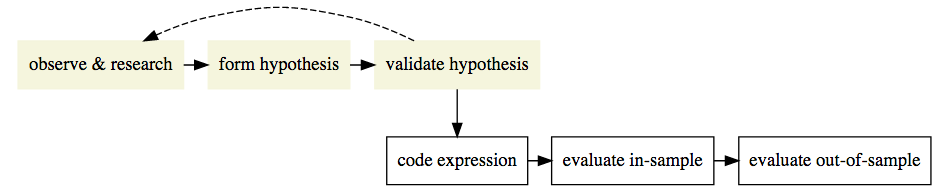
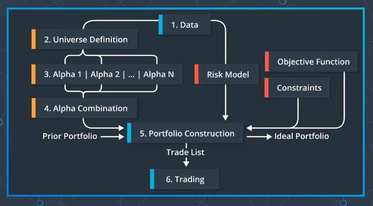

Strategies
Table of Contents
1 Types of Trading Strategies
- Single Asset Strategies
- Pairwise Strategies
- Cross-sectional Strategies(statistical arbitrage, market neutral investing): use group of assets
- Alternative Data Based Strategies: Satellite Imagery, Social Media, Geolocation, Consumer Transaction Data
Large hedge funds are most interested in 3 and 4, large hedge funds seek:
- High capacity -> 3
- New, different ideas -> 4
- Hedge funds hope to uncover signals in hard-to-find, expensive and difficult to work with data.
2 Alpha Research Flow
Answer the following question before you touch any data:
What feature of markets or investor behaviour would lead to a persistent anomaly that my signal will try to use?

- Observation: Find a pattern that seems to be recurring in the market over time.
- Turn the observation into Alpha(an expression), both mathematically and programmatically.
- (Alpha Combination: To combine several Alphas into an overall Alpha).
- Important step in modern markets
- Try to combine different inputs: e.g. Momentum alpha + Fundamental alpha
- Use historical data to verify it.
- Define strategy in more detailed manner, then run full backtesting exercises.
2.1 Inspirations
Overnight Return
- Firm-level Investor Sentiment
- Either momentum or mean reversion
- Momentum: Short-run persistence
- Mean reversion: In a long time window
- Harder to value firms
- Investors may rely more on sentiment when the value of company are more difficult to measure.
Winners and Losers
- Convexity: \(y=\beta t + \lambda t^2\)
- \(\beta\): Gain
- \(\lambda\): Accelerate
- Product of Ranked Gain times Ranked Accelerate \(Gain_r\times Acc_r\) ()
- It's a conditional factor: Momentum and Convexity
- \(Gain_r\) is small, \(Acc_r\) is small: Large short
- \(Gain_r\) is large, \(Acc_r\) is large: Large long
- Multiple Regression:
- Independent Variables: time and time squared
- Dependent Variable: stock price
- Get coefficients gain and accelerate
- Product of gain and accelerate as a conditional factor
3 Cross-sectional Strategy
3.1 Process of Cross-sectional Strategies

3.2 Example
An simple cross-sectional top-n momentum strategy:
- Choose a stock universe (attention: avoid Survivorship Bias)
- Re-sample prices if needed, then compute log returns.
- Rank by returns, select top-n/bottom-n(cross-sectional analysis)
- Compute long and short portfolio returns
- Combine portfolio returns
4 Statistical Analysis for Returns
- Sample Monthly Log Mean Return: \(\bar{x}\)
- t-statistic: \(t=\frac{{\bar{x}-\mu_0}}{SE}=\frac{\bar{x}}{SE}\) (if the true mean month return \(\mu_0\) is 0)
- \(SE=\frac{s}{\sqrt{n}}\): \(s\) is the sample standard deviance.
- \(H_0\): \(\mu=0\)
- \(H_A\): \(\mu>0\)
- If P-Value \(\le\alpha\) level, then reject \(H_0\).
5 Mean Reversion Strategies
Strategy based on the idea that prices will return to their "running mean" when they go way up or down.
6 Breakout Strategies
- Bollinger Bands
- Rolling Max/Min
7 Smart Beta Portfolio
A Smart Beta portfolio generally gives investors exposure or "beta" to one or more types of market characteristics(or factors) that are believed to predict prices while giving investors a diversified broad exposure to a particular market.
Smart Beta portfolios generally target momentum, earnings quality, low volatility, and dividends or some combination. Smart Beta Portfolios are generally rebalanced infrequently and follow relatively simple rules or algorithms that are passively managed.
Two types:
- Alternative Weighting
- Minimum Volatility ETF
7.1 See Project 3
8 References
- Lesson 8
- Project1 Trading with Momentum
- Lesson 14